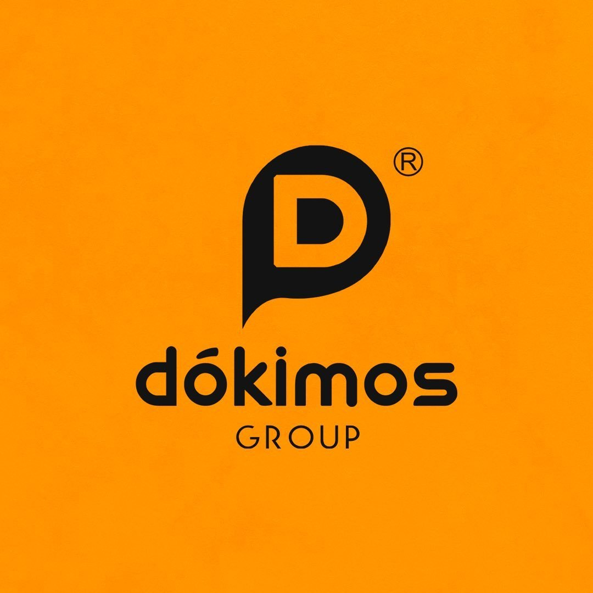

TEMA
5 sentidos

Uma experiência que você precisa viver.


UMA
EXPERIÊNCIA.
O Inspira FAM é uma experiência realizada pela Faculdade de Americana — FAM, criada para reunir pessoas, criatividade, conhecimento, marcas e projetos em um mesmo espaço. Durante quatro noites, a faculdade se transforma em um ambiente de descoberta, interação e conexão.
Deslize para explorar. Toque na foto para ampliar.

Mais do que assistir: circule, experimente, descubra projetos, conheça pessoas e viva cada espaço.
Artistas, marcas, patrocinadores e experiências na quadra interna da FAM.
Três apresentações, cases e uma roda de conversa com profissionais do mercado criativo.
Sete oficinas práticas simultâneas, exclusivas para alunos da FAM.
Conheça quem impulsiona esta experiência.

Conheça os artistas que fazem parte dessa experiência. Deslize para explorar!
As imagens dos artistas poderão ser adicionadas posteriormente.
Faculdade de Americana — FAM
Av. Joaquim Boer, 733 — Jardim Luciene
Americana — SP • CEP 13477-360
Evento na quadra interna
Use o endereço acima no seu aplicativo de mapas.
O estacionamento liberado nos dias do evento é o da Av. Unitika. Programe sua chegada por esse acesso.
De 9 a 12 de novembro, das 19h às 22h.
Entrada gratuita. Apresente sua inscrição para acessar o evento.
É gratuito, é aberto a todos e a inscrição é necessária para entrar.
FAZER INSCRIÇÃO